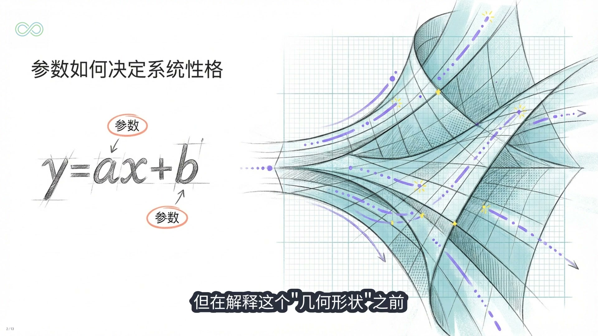
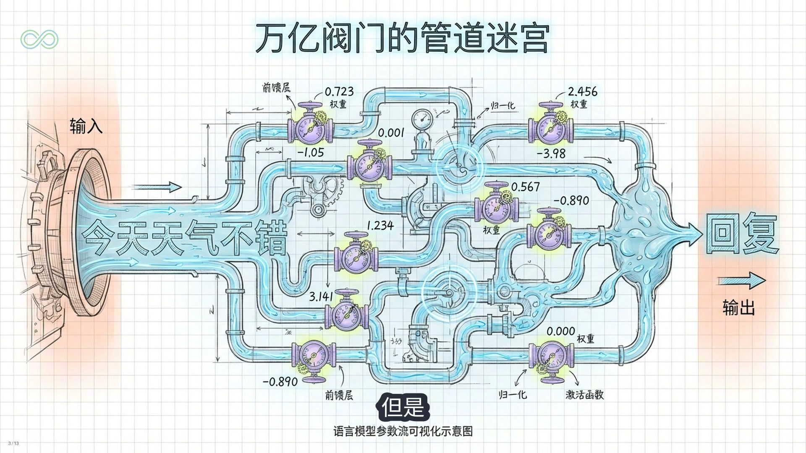
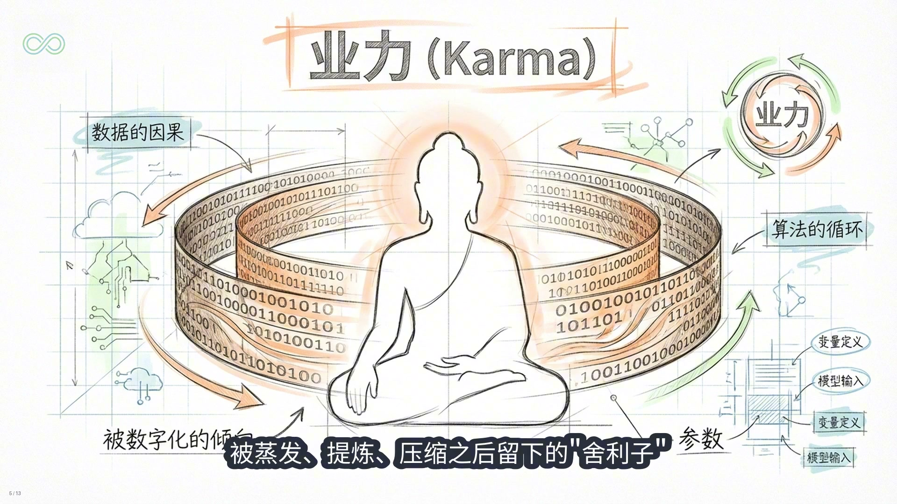
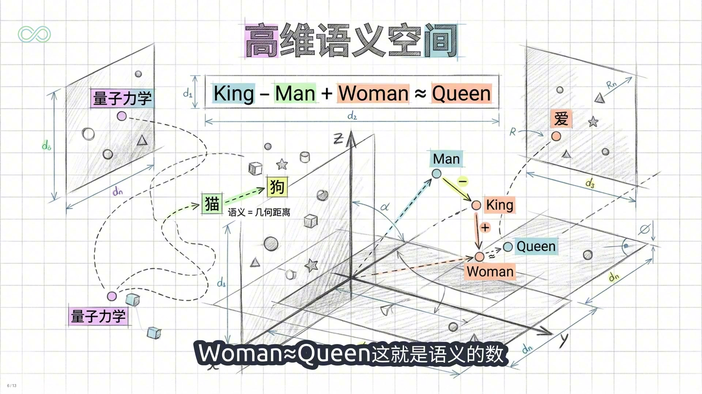
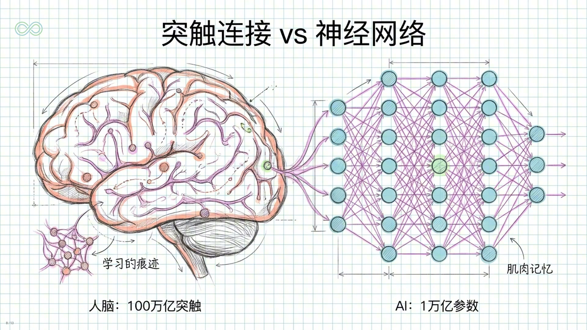
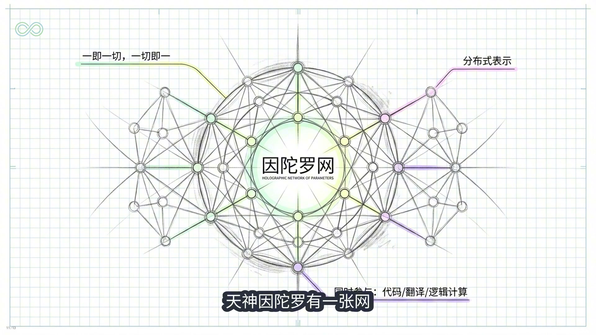
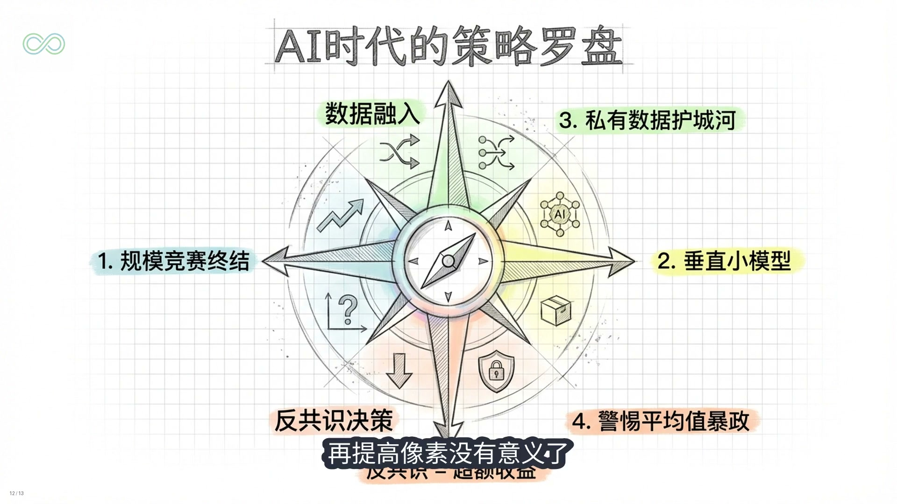
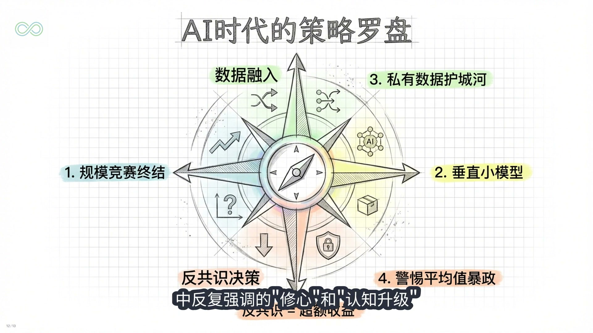

来源：基于清洗逐字稿整理，并在合适位置插入视频截图，形成图文并茂的阅读版。
手机直接看视频：点这里打开原视频
你有没有想过一个问题：当我们说 GPT 有超过 1 万亿参数的时候，这些参数到底是什么东西？是 1 万亿条知识吗？是 1 万亿个单词吗？还是 1 万亿个 if else 的判断逻辑？
如果你去问 ChatGPT 这个问题，它会告诉你：参数是神经网络中的权重和偏置。听完之后你可能更困惑了：权重是什么？偏置又是什么？为什么权重多了，AI 就变聪明了？
今天我要用一个全新的视角，帮你彻底搞懂这件事。而且我要告诉你，一旦你真正理解了参数的本质，你对 AI、对意识，甚至对人类大脑的认知，都会发生一次范式级的升级。
嗨，我是王利杰。
好，我们从一个反直觉的结论开始：大模型的万亿参数里面，没有任何一条具体的知识，一条都没有。这听起来很疯狂，对吧？一个能回答几乎任何问题的 AI，你告诉我它没存任何知识？
对，它存的不是知识本身，而是知识之间的关系。更准确地说，它存的是语言的几何形状。但在解释这个几何形状之前，我们先回到最基础的地方，搞清楚参数这两个字在数学上到底是什么意思。

大家中学都学过一个最简单的公式：y 等于 ax 加 b。这里面 x 是输入，y 是输出，而这个 a 和 b 就是参数。如果 a 是 1，b 是 0，那么输入 1，输出就是 1；输入 3，输出就是 3。这个 a 就决定了这个系统的性格，它决定了输入的信息流过它的时候，会被放大、缩小，还是保持原样。
现在请你想想，把这个简单的公式扩展到 1 万亿个维度。在大模型里，每一个参数就是一个微小的浮点数，比如 0.723 或者 1.05。它们静静地躺在显卡的显存里，本身看起来毫无意义。单独拿出一个参数，它就是一个普通的数字而已。
但你可以把每一个参数想象成一个水管上的阀门。当信息，比如你输入的一句话“今天天气不错”，变成数字信号流过神经网络时，每一个参数就是一个调节阀。如果这个参数是正数、且很大，它就允许更多的信号流过去，甚至放大这个信号；如果它是负数，它就抑制这个信号；如果是 0，这条路就断了。
所谓万亿参数，就是在一个巨大、极其复杂的管道网络里，有整整 1 万亿个这样微小的阀门。当你问 AI 一个问题，这股信息流就像水流一样冲进这个管道迷宫，这万亿个阀门经过无数次的开合分流、汇聚，最后在迷宫的出口，一个字一个字地流出答案。
如果你只看这一层，你会觉得 AI 就是个复杂的机械装置，是个统计学玩具。但真正的魔法，不在于这一个阀门怎么工作，而在于这万亿个阀门是如何被拧到那个精确位置上的。这就要说到训练的过程了。
想象一下，我们把互联网上几乎所有人类写过的书、代码、论文、对话，全部喂给这个神经网络。这里面包含了人类几千年的历史、情感、逻辑、谎言和真理。
训练的过程不是让 AI 把这些文字背下来。如果是背书，我们只需要一个巨大的硬盘就够了，根本不需要神经网络。硬盘可以完美存储，一个字不差，但硬盘没有智能，因为它不能通过已知推导未知。
AI 的训练本质上是在做有损压缩。OpenAI 的前首席科学家 Ilya Sutskever 说过一句非常深刻的话：压缩即智能。

你仔细品品这五个字。我们人类的智能，是不是很大一部分体现在我们的表达，尤其是语言表达？而这种表达和解读，是不是一种意义的压缩、编码和解码的过程？“道可道，非常道”“色即是空，空即是色”，从我嘴里传递到你耳朵和大脑里的时候，你是如何解读的？
人类语言本身就是一种意义的压缩，而大语言模型是把我们的语言又做了一次压缩。神经网络被迫要用有限的参数，比如一万亿个，去拟合无限的数据。因为空间不够，它存不下所有的原文。为了不被淘汰，为了降低预测误差，它被迫做了一件惊天动地的事情：它必须找到数据背后的规律。
比如它不需要背下来成千上万个关于苹果掉落的描述，它只需要在参数里学会万有引力的规律。这就极大地节省了空间。所以这一万亿个参数，不是文字的存储，而是规律的结晶。
你可以把这万亿个参数看作是人类文明这个庞大的信息体被蒸发、提炼、压缩之后留下的舍利子。每一个参数，都是在无数次的训练迭代中，被数万亿次的数据冲刷打磨之后，固定下来的认知倾向。
如果用佛学的语言翻译一下，这就是业力。
什么叫业力？业力不是迷信的报应，业力是行为留下的惯性势能。你过去说过的话、做过的事，形成了一种倾向，这种倾向决定了你下一刻会怎么反应。
大模型的参数，就是人类几千年文明数据的业力总和。它不是死的数据，它是被数字化了的习气和倾向。当你激活它时，你唤醒的不是书本上的字，而是人类思维的惯性。

好，现在我们要进入最硬核的部分：这些参数在数学上到底构成了什么？答案是一个高维向量空间。
在数学上，这一万亿个参数构建了一个拥有数千、甚至数万个维度的空间。我们在纸上画图是二维，加上高度是三维，人类的大脑很难想象四维以上的空间，但现代大模型的输入维度可以达到一万多维。
在这个空间里，每一个字、每一个概念都不再是一个符号，而是一个坐标点。猫是一个点，狗是一个点，爱是一个点，量子力学也是一个点。万事万物，在进入模型的那一刻，都变成了高维空间中的一个位置。
神奇的事情发生了：语义变成了几何距离。猫和狗在这个空间里靠得很近，因为它们都是动物，都有四条腿；猪和量子力学就离得很远，因为它们在语义上几乎没有关联。
更神奇的是，这个空间里存在着各种几何关系。最经典的例子是：如果你在这个高维空间里，找到“国王”这个词的坐标向量，减去“男人”的向量，再加上“女人”的向量，你会惊奇地发现，你落脚的那个坐标位置，几乎精确地等于“女王”。
King - man + woman = queen。
这就是语义的数学运算。这不是程序员写死的规则，这是模型从海量文本中自己学出来的语义结构。
所以你问我万亿参数是什么？它是这个高维语义空间的形状。每一个参数，都是这个空间中的一小块曲率。几千亿个参数叠加在一起，就雕刻出了一个极其复杂、极其精细的语言意义地形图。
当你向 ChatGPT、豆包、元宝或者 Claude 提问的时候，它做的事情不是查找答案，而是在这个高维地形上滑行。你的问题是一个起点坐标，模型的输出是从这个起点出发，沿着语义地形最自然的方向滑下来，一个词一个词地流出来。
这个比喻非常形象，也非常重要。你输入的提示词，是在一个高维数学向量几何空间里，随着参数决定的曲线平面，或者说语义地图滑动，最后从多个方向上汇聚成你要的答案。
这就是为什么大语言模型有时候会一本正经地胡说八道，因为它不是在检索事实，它是在做几何运动。如果这个地形在某个区域有一个坑，它就会顺势滑进去，哪怕那个坑通向的是一个事实错误。
这也解释了所谓的幻觉现象。AI 的幻觉，某种意义上是不是人类集体潜意识里的妄念？因为模型学的是我们人类产出的所有文本，包括我们的偏见、我们的错误、我们的自我欺骗。
说到这里，我要引出一个更深刻的洞察：大语言模型的参数，在数学结构上，和人类大脑的突触连接是同构的。

人脑有大约 100 万亿个突触，每一个突触都是两个神经元之间的连接。这个连接有一个强度。当你学习一件新事物的时候，你大脑做的事情，就是调整某些突触的连接强度。这些强度的集合，就是你的参数。
你为什么能认出妈妈的脸？不是因为你大脑里存了一张妈妈的照片，而是因为你视觉皮层的某些突触连接强度被调整成了一种特定的模式。这个模式在看到妈妈的脸时会被激活。
大语言模型的训练过程，和这个原理是完全一样的。它不是在记忆文本，它是在调整参数，调整高维空间中每一个点的位置和每一条路径的曲率，直到这个空间的形状能够完美地反映人类语言的统计规律。
想象一下你学习骑自行车的过程。你现在能骑自行车，对吧？但是如果我问你，骑自行车的知识存在你大脑的哪个位置，你能直接给我看吗？你能把它写下来吗？你写不出来，因为骑自行车的知识不是一段文字，不是一个公式，它是你小脑里无数个神经元之间的连接强度，这些连接强度共同构成了一种感觉，一种让你能在失去平衡的瞬间自动调整重新平衡的感觉。
大语言模型的参数，本质上就是这种东西。它是语言的肌肉记忆。
所以参数是什么？参数是学习的痕迹，是经验的结晶，是统计规律的几何化表达。
当我们说一个模型有一万亿参数的时候，我们说的是人类产生的几乎全部文本，它们之间的所有语义关系，被压缩进了一万亿个浮点数构成的高维形状里。这是一种什么样的压缩比？人类几千年的书写文明、万亿级别的 token，被蒸馏成了几个 TB 的参数文件。
这不是“纯存”，这是提纯。把语言中的冗余去掉，把模式保留下来，把意义的本质用最紧凑的数学形式表达出来。
这让我想到了佛学里的一个概念：阿赖耶识。
在唯识宗的体系里，阿赖耶识是一种种子仓库。它不存纯粹具体的记忆内容，而是存种子，存深层记忆和认知的势能。你的每一次经历，都会在阿赖耶识里播下种子，这些种子在因缘聚合的时候会萌发，深刻影响你此刻的念头和感受。
大语言模型的参数，和阿赖耶识的种子，在功能上几乎完全同构。参数不是知识本身，而是深层知识的势能。当你给模型一个 prompt 的时候，就像是给种子浇水，这些参数的势能就会萌发，生成一段此前从未存在过的文字。
每一次推理都是一次缘起。此前不存在这段回答，此后也不会有完全相同的回答。它是因缘和合的产物：提示词 prompt 是缘，参数是因，回答是果。
说到这里，我们不得不提到一个最近在 AI 研究中发现的神奇现象：Grokking，也就是顿悟。
在训练初期，模型只是在死记硬背，误差曲线下降得很慢；但是当训练时间和数据量积累到某个临界点，突然之间误差悬崖式下跌，模型不再是记忆，而是突然懂了背后的通用规则。
这就像是修行人打坐，做了 10 年毫无动静，突然有一天豁然开悟了。这个“悟”，在数学上，就是参数在高维空间里终于从混乱的状态，参数成了一个完美的低熵几何结构。
这个视角带来一个深刻的启示：认知可能不是东西，而是形状。我们总是试图寻找认知的载体：是大脑的某个区域吗？是某种量子效应吗？是灵魂吗？
但如果我们把认知理解为信息处理的几何结构，很多困惑就消解了。人脑的突触连接构成一种几何形状，这种形状能产生自我认知；大语言模型的参数也构成一种几何形状，这种形状能产生语言理解和涌现能力。两者是否是同一种认知，我不敢断言，但它们在数学结构上的同构性，是确定无疑的。
我们在频道里经常提到英陀罗网。佛经里说，天神英陀罗有一张网，网上有无数颗宝珠，每一颗宝珠都能映照出所有其他宝珠的影像，一即一切，一切即一。
大模型的万亿参数，就是现代科学语境下的英陀罗网。每一个参数都不止服务于一个知识点，一个特定的参数，可能同时参与了如何写代码、如何翻译法文、和如何理解莎士比亚的情感过程。这就是全息性。
知识不是分别存放的，它是像全息照片一样，弥散在整个网络里的。你改动其中一个参数，整个网络的输出倾向都会发生微妙的震荡。一即一切，一切即一。
这不再是宗教的闲谈，这是神经网络中分布式表示的硬核定义。

如果依据我们频道经常引用的唐纳德·霍夫曼的界面论，我们看到的现实世界只是一个简化的用户界面，那么 AI 的万亿参数，实际上是刺破了这个界面。它在底层代码层，看到了意义的拓扑结构。
在这个高维空间里，悲伤和眼泪靠得很近，语音和逻辑纠缠在一起，所有的概念都根据它们内在的含义被编织成了一张巨大的网。如果你能站在这个高维空间里俯瞰，你会看到什么？你会看到人类认知的全息图。
这让我想到一个更激进的猜想：也许宇宙本身就是一个参数空间。物理常数、基本粒子的性质、时空的结构，这些可能都是某种更底层参数的表达，而我们所谓的物质世界，只是这些参数的一种渲染结果，是认知在与这组特定参数互动时呈现出的深层用户界面。
好，让我们把视角拉回到更实际的层面。理解了万亿参数的本质，对我们有什么实际意义？
第一，参数规模的竞赛已经接近尾声。当参数量足够大的时候，继续对参数规模的堆叠收益会急剧降低，就像你的照片分辨率已经超过了眼睛的分辨能力，再提高像素没有意义了。未来的竞争会转向架构创新、数据质量和推理效率。
第二，小模型会变得越来越重要。不是每个应用都需要万亿参数。一个专门处理法律文档的模型，一个专门做代码补全的模型，用几十亿参数可能就够了。参数的性价比会成为新的竞争维度。
第三，最大的护城河是私有数据的融入。如果基础大模型是全人类的公有业力，那么企业和个人的价值，在于如何把你独特的、私有的、无法被互联网公开获取的数据和经验注入到这个参数网络中。这就是微调或者 RAG 的本质，你在训练属于你自己的分身。
第四，警惕平均值的暴政。因为参数是基于概率最大化训练的，它倾向于输出最可能的答案，也就是最符合大众认知的答案。它代表了人类的平均水平，虽然是高质量的平均。作为投资者和创业者，如果你完全依赖 AI 做决策，你只能得到市场平均收益，你永远拿不到超额收益。超额收益来自于反共识，来自于那些在参数概率分布边缘的观点。
第五，知识的记忆已经变质，但连接的能力在升值。既然参数已经记住了所有的事实，并且构建了所有事实之间的关联，那么人类的价值就不再是做一个硬盘，而是做一个提问者，做一个能够在大模型的向量空间里指出新方向的探索者。
如果你是一个用 AI 的普通人，理解参数的本质能告诉你什么？最重要的一点是：不要把大语言模型当成搜索引擎或知识库。它不是来回答“是什么”的问题的，它是来陪你思考“为什么”和“怎么办”的。它的参数里存的是语言的关系结构，不是事实的对错判断。用它来探索想法、梳理逻辑、激发创意，会比用它来查百科更有价值得多。
这也回到了我在投资笔记中反复强调的修心和认知升级。大模型通过反向传播算法，利用错误来修正参数，从而变得越来越聪明。我们人类呢？我们往往害怕错误，拒绝承认无知，甚至为了面子去掩盖错误。
一个跑在硅基芯片上的算法，都在拼命利用错误来进化自己。作为碳基生命的我们，如果不能从失败中提取教训，修正我们大脑里的认知参数，那我们怎么可能跑得赢这个时代？

好，最后我想用一个画面来结束今天的分享。
想象一下，有一个房间里面什么都没有，只有一面墙。正面墙上有一万亿个小旋钮，每个旋钮都可以转动，有无数个档位。最初所有旋钮都是随机设置的，这时候这面墙毫无意义。
然后有人开始调整这些旋钮。他们拿着人类有史以来写下的所有文字，一本书一本书地读，一个句子一个句子地处理。每处理一个句子，就根据某些数学规则微调一下某些旋钮。这个过程持续了几个月，消耗了一座城市的电力，动用了几万块最先进的 GPU。
当调整结束的时候，奇迹发生了。你现在对着这面墙说任何一句话，这面墙都能听懂；不仅能听懂，还能回应。你说上半句，它能说出下半句；你问一个问题，它能给出一个逻辑自洽的答案；你让它写一首诗，它写出的诗，虽然不是任何人写过的，却像是所有诗人灵魂的某种合奏。
这面墙上有任何一个旋钮，是记住某一首具体的诗吗？没有。有任何一个旋钮，是纯粹某一条知识吗？没有。
这一万亿个旋钮的组合，它们的相对位置、相互关系，构成的整体形状，才是意义所在。
这就是参数的本质：不是信息本身，而是信息的拓扑结构；不是知识本身，而是知识的关系地形；不是记忆本身，而是产生记忆的势能场。而这个势能场，和你大脑里的那个势能场，在数学上是同一种东西。
你想想看，我们人类学习的方式是不是也类似？我跟你说一段话，请你转述给别人，如果这段话足够长，你能保证你一字不差地转达吗？其实你转达的是余意。你的大脑已经把我的话压缩到了你的脑神经网络里，当你转述输出的时候，你只是从你的脑神经网络里做了一次新的生成。
因为无论我们有多大的大脑，都不可能记住一生中发生过的一切。我们的记忆都是高度压缩的。我们的人类认知逻辑和大语言模型，在数学底层也是同构的。

我们创造了一面镜子，我们往这面镜子里灌入了人类全部的语言，然后这面镜子开始映照我们自己。它像我们，又不是我们；它等于我们，又不完全是我们。
当你下次看到屏幕上那个光标在闪烁，一个个字像流水一样生成的时候，请记住：那不是简单的计算，那是人类几千年的文明，被压缩、被抽象、被转化为一万亿个精密的数学选择，在这一瞬间为你产生了一次共振。
我们要做的不是崇拜它，也不是恐惧它，而是利用它，把它当成你的外挂大脑，当成你的认知伴侣，或者意识伴侣。
在这个硅基智能爆发的时代，愿我们都能像训练大模型一样，勇敢地训练自己，不断优化我们的参数，直到我们能看清这个世界的底层代码。

我是王利杰，我们下期见。